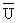
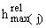

| Name |
Units |
Description |
Notation |
| SFDBULKD |
g cm-3 |
Dry bulk density of surface soil |
ßs |
| STAREA |
cm2 |
Area ofthe waste site |
A |
| STAVAILW |
cm |
Water-holding capacity of waste zone |
wWHC |
| STAVTEMP |
oC |
Average air temperature at the waste site |
T24 |
| STAVWINDV |
m s-1 |
Mean annual wind speed |
 |
| STCFACTR |
-- |
Vegetative cover factor |
fv |
| STCLOUD |
fraction |
Fraction of sky with cloud cover |
csky |
| STCORRSC |
-- |
Non-erodible area correction factor |
fne |
| STCRUST |
fraction |
Fraction of surface area covered with a crust layer |
fcr |
| STDELTA_T |
yr |
Length of time step |
Dt |
| STELEV |
m |
Elevation of waste site |
h1 |
| STKFACTR |
English Units(a) |
Soil erodibility factor |
Kfact |
| STLAT |
degrees |
Latitude of waste site |
-- |
| STLCDELEV |
m |
Elevation of Local Climatalogical Data (LCD) Station |
h0 |
| STLENGTH |
cm |
Length of site down erodible slope |
Lslope |
| STLOCSUR |
m |
Surface roughness length |
Lr |
| STMAXTIME |
yr |
Length of run |
-- |
| STMAXWIND |
m s-1 |
Maximum wind speed at site |
Umax |
| STMINWST |
-- |
The minimum waste fraction for which analysis performed |
-- |
| STMNUMPRE |
-- |
Number of monthly precipitation events |
npj |
| STMOISTC |
fraction |
The volumetric moisture content fraction of the source zone |
qw |
| STMPRECIP |
cm |
Monthly precipitation amount measured at LCD |
dpruj |
| STNUMDIS |
month-1 |
Frequency of mechanical disturbances to site |
fd |
| STNUMPRCP |
yr-1 |
Numberof days with 0.254mm precipitation |
np |
| STOVLFLX |
fraction |
Overland flux for a ponded case as fraction of total water volume. |
 |
| STPEI |
-- |
Thornthwaite's Precipitation-Evaporation Index |
fPE |
| STPFACTR |
-- |
Erosion control practice factor |
Pfact |
| STPRECIP |
cm |
2-yr, 6-hr, precipitation event |
P2,6 |
| STRHMAX |
% |
Maximum monthly relative humidity |
 |
| STRHMIN |
% |
Minimum monthly relative humidity |
|
| STROADS |
-- |
Flag to designate type of road travel |
Control |
| STRTDIST |
km |
Distance traveled over contaminated surface |
Lroad |
| STRTNUM |
day-1 |
Average number of vehicles traveling over surface daily |
nv |
| STSAND |
% |
Percent sand in surface soil |
Psand |
| STSCSCN |
-- |
SCS curveumber |
nscs |
| STSILT |
% |
Percentof silt on road surface |
Psilt |
| STSLOPE |
% |
Slope of waste site |
Sslope |
| STSSOL |
g cm-3 |
Concentration of suspended solids in surface impoundment |
ßss |
| STSTORMI |
-- |
Storm type index for location of waste site |
-- |
| STTEMP |
oC |
Temperature measured at LCD |
T24 |
| STTHICK |
cm |
Thicknessof the waste zone |
h, Lx, dp |
| STVEGFR |
fraction |
Fraction of surface area covered with vegetation |
fv |
| STVSPEED |
km hr-1 |
Mean vehicle speed at site |
vveh |
| STVWEIGH |
Mg |
Mean vehicle weight |
Mveh |
| STWHEELS |
-- |
Mean number of wheels per vehicle |
nw |
| STWINDHT |
m |
Height above ground of local wind measurements |
hin |
| STWINDV |
m s-1 |
Mean monthly wind speed at LCD |
Ud2 |
| WZDBULKD |
g cm-3 |
Dry bulk density of waste zone |
ßs |